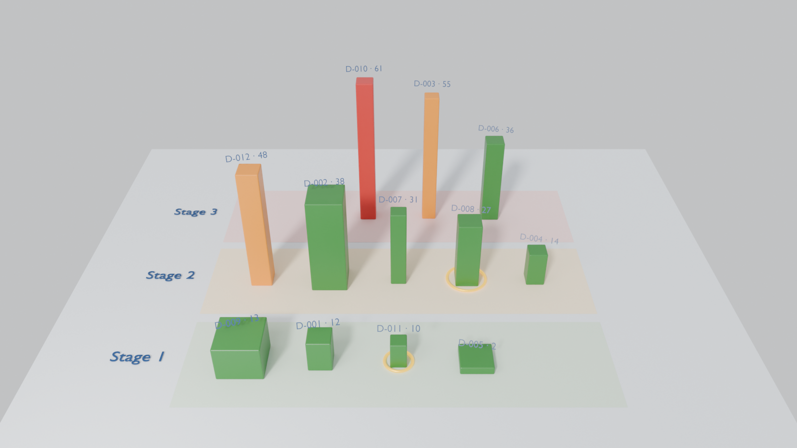

4 894 MEncours analysé (FCFA)
3Dossiers en alerte (score ≥ 40) · 212 M
1Passages en Stage 2 par signal qualitatif (SICR)
2Dossiers à confirmer par un analyste
Encours par motif de difficulté
Vue 3D du portefeuille (Blender)

Hauteur = score d’alerte · section = encours · rangée = Stage IFRS9 · anneau doré = revue analyste
Dossiers classés par score d'alerte
| Dossier | Encours | Impayés | Classe | Motif | Perspective | Alerte | Signaux et propositions |
|---|---|---|---|---|---|---|---|
| D-010 PME |
48 M couv. 0% |
210 j | douteux → douteux Stage 3 |
Fraude / détournement conf. 1.00 |
0.0 / 4 | 61 | Fraude 98%
CommentaireSuspicion de détournement des fonds : le matériel financé n'a jamais été livré selon la visite sur site. Dossier transmis à la conformité. |
| D-003 Particulier |
8 M couv. 0% |
95 j | sensible → douteux Stage 3 |
Client disparu conf. 0.93 |
0.1 / 4 | 55 | Rupture de flux 77%
CommentaireClient injoignable depuis deux mois, salaire plus domicilié chez nous. Employeur indique qu'il a quitté l'entreprise. |
| D-012 PME |
155 M couv. 97% |
76 j | sensible → sensible Stage 2 |
Tension de trésorerie conf. 0.93 |
1.1 / 4 | 48 | Restructuration 98%Garantie fragile 91%
CommentaireRestructuration accordée en juin (allongement de 18 mois), nouvelles échéances déjà en retard. Garantie : nantissement du stock, non revu depuis 2023. |
| D-002 Corporate |
1 250 M couv. 32% |
47 j | sain → sensible Stage 2 |
Perte de revenus conf. 1.00 |
2.0 / 4 | 38 | Restructuration 98%
CommentaireBaisse forte du chiffre d'affaires depuis la perte du contrat avec son principal client minier. Le DG demande un rééchelonnement sur 24 mois. |
| D-006 PME |
95 M couv. 21% |
128 j | douteux → douteux Stage 3 |
Litige juridique conf. 1.00 |
2.0 / 4 | 36 |
CommentaireLitige avec l'administration fiscale, comptes bloqués par avis à tiers détenteur. Avocat du client confiant mais aucune date. |
| D-007 Particulier |
14 M couv. 0% |
61 j | sensible → sensible Stage 2 |
Santé / décès conf. 1.00 |
2.0 / 4 | 31 |
CommentaireLe client a été hospitalisé, sa famille nous a contactés. Il promet de reprendre les remboursements dès son retour au travail, sans date précise. |
| D-008 PME |
240 M couv. 25% |
0 j | sain → sain Stage 2 |
Tension de trésorerie conf. 0.47 |
2.7 / 4 | 27 | Rupture de flux 71%
⚑ Revue analyste : motif incertain (0.47)
CommentaireÉchéances payées à temps mais via des apports successifs du gérant |
| D-004 PME |
62 M couv. 129% |
33 j | sain → sensible Stage 2 |
Aucune difficulté conf. 1.00 |
4.0 / 4 | 14 | Incohérence 96%
CommentaireDossier régularisé, aucun impayé. RAS. |
| D-009 Corporate |
2 100 M couv. 43% |
18 j | sain → sain Stage 1 |
Retard technique conf. 1.00 |
3.2 / 4 | 13 |
CommentaireRetard technique : changement de banque de domiciliation des recettes d'exportation, flux redirigés à partir du 15. Groupe solide. |
| D-001 PME |
185 M couv. 65% |
12 j | sain → sain Stage 1 |
Retard technique conf. 0.84 |
3.0 / 4 | 12 | Promesse datée 97%
CommentaireRetard ponctuel lié au paiement tardif d'une facture par la SENELEC. Le client a transmis l'ordre de virement, régularisation attendue cette semaine. |
| D-011 Particulier |
6 M couv. 0% |
8 j | sain → sain Stage 1 |
Retard technique conf. 0.46 |
3.5 / 4 | 10 |
⚑ Revue analyste : motif incertain (0.46)
CommentairePrélèvement rejeté pour provision insuffisante, client prévenu par SMS, paiement effectué hier en agence. |
| D-005 Corporate |
730 M couv. 100% |
0 j | sain → sain Stage 1 |
Aucune difficulté conf. 1.00 |
4.0 / 4 | 2 |
CommentaireActivité stable, résultats 2025 en hausse de 8 %. Hypothèque de premier rang sur l'entrepôt de Diamniadio, évaluée récemment. |